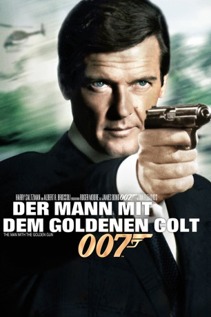
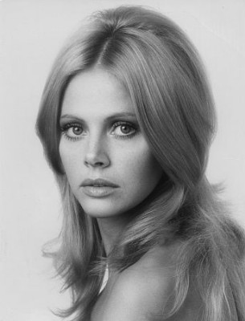
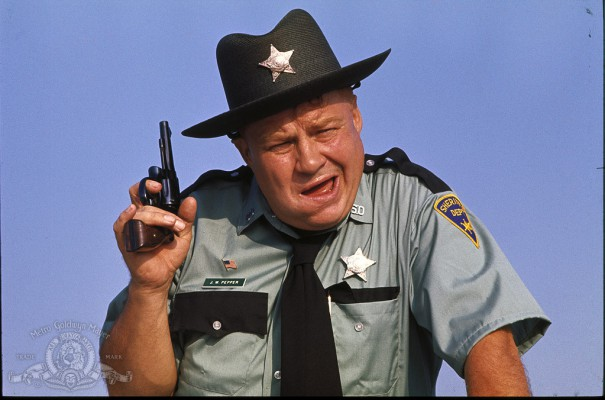
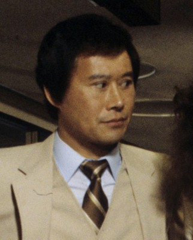
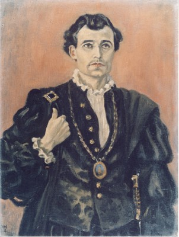
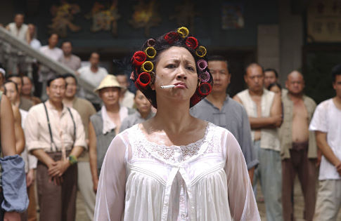
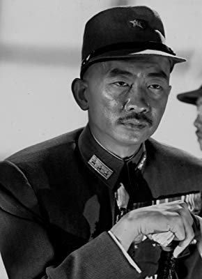
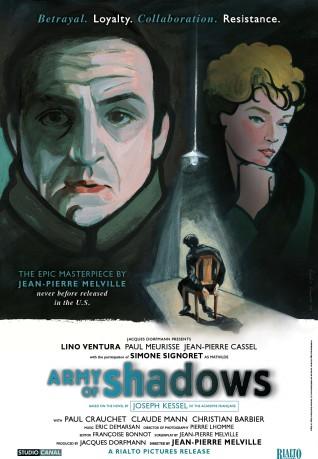

#263 James Bond 09 - Roger Moore - Der Mann mit dem goldenen Colt
Alternativ: The Man with the Golden Gun
 
 IMDB-Wertung: 6.8 / 10
IMDB-Wertung: 6.8 / 10  Metascore: 43
Metascore: 43 
Eine goldene Pistolenkugel, auf der 007 eingraviert ist, trifft im Hauptquartier des Secret Service ein. Absender ist der Profikiller Scaramanga, und Scaramanga hat noch nie ein Ziel verfehlt. James Bond versucht den Killer rechtzeitig zu stoppen.
Jahr: 1974
Dauer: 125 Minuten
FSK: 16
Land: England Studio: United ArtistsTonspuren: DTS - , DTS - ,
Untertitel: Deutsch, Englisch,
Auflösung: 1080p (1920×1038) Größe: 16588 MB
Genre: Action, Abenteuer, Thriller
Regisseur: Guy Hamilton
Drehbuch: Richard Maibaum, Tom Mankiewicz, Ian Fleming
Soundtrack: John Barry
Darsteller:
 Roger Moore als James Bond
Roger Moore als James Bond Christopher Lee als Scaramanga
Christopher Lee als Scaramanga-  Britt Ekland als Goodnight
- Maud Adams als Andrea
- Hervé Villechaize als Nick Nack
-  Clifton James als J. W. Pepper
-  Soon-Tek Oh als Hip
 Marc Lawrence als Rodney
Marc Lawrence als Rodney Bernard Lee als 'M'
Bernard Lee als 'M' Lois Maxwell als Moneypenny
Lois Maxwell als Moneypenny Marne Maitland als Lazar
Marne Maitland als Lazar Desmond Llewelyn als 'Q'
Desmond Llewelyn als 'Q'-  Michael Goodliffe als Chief of Staff Bill Tanner , uncredited
-  Qiu Yuen als Nara, Hip's Niece #1 , uncredited
-  Richard Loo als Hai Fat
- James Cossins als Colthorpe
- Yao Lin Chen als Chula
- Carmen Du Sautoy als Saida
- Gerald James als Frazier
- Michael Osborne als Naval Lieutenant
- Michael Fleming als Communications Officer
- Leslie Crawford als Cowboy in Fun House , uncredited
- Gordon Everett als Gibson , uncredited
- Ray Marioni als Al Capone , uncredited
 Terence Plummer als Beirut Thug , uncredited
Terence Plummer als Beirut Thug , uncredited- Jay Sidow als Maybelle Pepper , uncredited
- George Silver als Fat Beirut Thug , uncredited
- Rocky Taylor als Beirut Thug , uncredited
- Francoise Therry als Chew Mee , uncredited
- Master Toddy als Martial Arts Student That Fights Hip's Nieces , uncredited
-  Nikki Van der Zyl als Chew Mee / various , uncredited
- Joie Vejjajiva als Cha, Hip's Niece #2 , uncredited
- Wei Wei Wong als Bottoms Up Waitress , uncredited
Datei: X:\7+mehr(A-Z)\007 James Bond\James Bond 09 - Roger Moore - Der Mann mit dem goldenen Colt (1974, FSK16, 1920x1038).mkv seit 15.02.2015
Festplatte: HD Collection-7+mehr(A-Z)+Person
 Es gibt insgesamt 28 Filme in der Gruppe '7+mehr(A-Z)\007 James Bond'
Es gibt insgesamt 28 Filme in der Gruppe '7+mehr(A-Z)\007 James Bond'